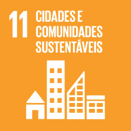
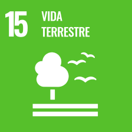

<html></html>
  <head>
    <title>Voluntask - Faça login</title>

    <link rel="stylesheet" href="styles.css">

    <link
      href="https://cdnjs.cloudflare.com/ajax/libs/font-awesome/5.15.3/css/all.min.css"
      rel="stylesheet"
    />

    <link href="https://cdn.jsdelivr.net/npm/bootstrap@5.3.3/dist/css/bootstrap.min.css" rel="stylesheet" integrity="sha384-QWTKZyjpPEjISv5WaRU9OFeRpok6YctnYmDr5pNlyT2bRjXh0JMhjY6hW+ALEwIH" crossorigin="anonymous">
    <style>
      #main {
        margin: 0;
        font-family: Arial, sans-serif;
        display: flex;
        height: 100vh;
        flex-direction: row;
      }
      .left,
      .right {
        flex: 1;
        display: flex;
      }

      .left {
        justify-content: center;
        padding: 10px;
        flex-direction: column;
      }

      .right {
        justify-content: center;
        align-items: center;
        background-image: url("../../assets/passado.jpeg");
        background-repeat: no-repeat, repeat;
        background-position: center
      }
      .left {
        background-color: #ffffff;
      }
      .right {
        background-color: #8fd6a9;
      }
      .container {
        background-color: #ffffff;
        border: 2px solid #8fd6a9;
        border-radius: 10px;
        padding: 40px;
        width: 400px;
        box-shadow: 0 4px 8px rgba(0, 0, 0, 0.1);
      }
      .container h2 {
        text-align: center;
        color: #000000;
        font-size: 28px;
        margin-bottom: 30px;
      }
      .input-group {
        margin-bottom: 20px;
        position: relative;
      }
      .input-group input {
        width: 100%;
        padding: 15px 15px 15px 40px;
        border: 2px solid #f4a261;
        border-radius: 5px;
        outline: none;
        font-size: 16px;
      }
      .input-group i {
        position: absolute;
        left: 10px;
        top: 50%;
        transform: translateY(-50%);
        color: #f4a261;
      }
      .btn {
        width: 100%;
        padding: 15px;
        background-color: #f4a261;
        border: none;
        border-radius: 5px;
        color: #ffffff;
        font-size: 18px;
        cursor: pointer;
        box-shadow: 0 4px 8px rgba(0, 0, 0, 0.1);
      }
      .forgot-password, .create-account {
        text-align: center;
        margin-top: 10px; /* Add some spacing above */
      }
      .forgot-password a, .create-account a {
        color: #f4a261; /* Match the color with input icons */
        text-decoration: none; /* Remove underline */
        font-size: 16px; /* Match font size */
      }
      .forgot-password a:hover, .create-account a:hover {
        text-decoration: underline; /* Underline on hover for better UX */
      }
      .logo {
        text-align: center;
      }
      .logo img {
        width: 200px;
      }
      .logo h1 {
        font-size: 24px;
        color: #000000;
        margin-top: 10px;
      }
      @media (max-width: 768px) {
        body {
          flex-direction: column;
        }
        .container {
          width: 90%;
          padding: 20px;
        }
        .container h2 {
          font-size: 24px;
          margin-bottom: 20px;
        }
        .input-group input {
          padding: 10px 10px 10px 35px;
          font-size: 14px;
        }
        .btn {
          padding: 10px;
          font-size: 16px;
        }
      }

      #navbar
{
    background-color: #88D3AB;
}
#apoiebutton
{
    background-color: #ECBA00;
}


#footer
{
    background-color: #88D3AB;
    bottom: 0;
    left: 0;
    padding: 0;
    margin: 0;
    width: 100%;
}

#texto {
    padding: 20px 60px;    
}

#texto h1 {
    text-align: center;
}

.linha {
    display: flex;
    flex-direction: row;
    align-items: center;
    gap: 20px;
    margin: 10px 0;
}
    </style>
  </head>

  <body>

    <nav id="navbar" class="navbar">
        <div class="col-md-4">
          <a href="/pages/home">
            
          </a>
        </div>
        <ul class="nav col-md-4 d-flex justify-content-center" id="menu-items">
          <li class="nav-item"><a href="/pages/home" class="nav-link ps-2 link-dark fw-semibold">PROJETOS</a></li>
          <li class="nav-item"><a href="" class="nav-link ps-2 link-dark fw-semibold">SOBRE NÓS</a></li>
        </ul>
        <div class="col-md-4 d-flex justify-content-center">
          <a href="/pages/login" class="nav-link fw-semibold px-4">LOGIN</a>
        </div>
    </nav>
      
    <div id="main">
        <div id="texto">
            <h1>Objetivos de Desenvolvimento Sustentável
                Alinhados</h1>
            

            <div class="linha">
                
                <p>
                    Em um mundo marcado por desafios sociais e ambientais, a adoção de práticas sustentáveis e o engajamento em trabalho voluntário emergem como pilares fundamentais para a construção de um futuro mais justo e equilibrado. Esses dois aspectos estão intrinsecamente conectados, pois promovem a conscientização, a solidariedade e a responsabilidade coletiva em prol do bem-estar global.
                </p>
            </div>

            <div class="linha">
                
                <p>
                    O trabalho voluntário complementa essa visão ao oferecer um meio poderoso de promover mudanças sociais. Dedicar tempo e habilidades para causas sociais fortalece comunidades, melhora a qualidade de vida e cria redes de solidariedade. É uma forma de empatia prática, onde as ações individuais geram um impacto coletivo.

Além de beneficiar os outros, o voluntariado também transforma o próprio voluntário. Ele permite o desenvolvimento de habilidades como liderança, trabalho em equipe e comunicação, enquanto amplia perspectivas sobre problemas globais e locais. É uma via de mão dupla que conecta pessoas a propósitos maiores do que elas mesmas.
                </p>
            </div>
            
        </div>
    </div>

    <div id="footer" class="container-fluid">
        <footer class="d-flex flex-wrap justify-content-between align-items-center">
          <div class="col-md-4 ps-3">
            
          </div>
          <div class="col-md-4 d-flex justify-content-center text-body-secondary">Copyright &copy; 2024 VOLUNTASK & WAITA.
            Todos os direitos reservados.</div>
          <div class="col-md-4 d-flex justify-content-end">
            
          </div>
        </footer>
      </div>
    <script src="./index.js"></script>
  </body>
</html>